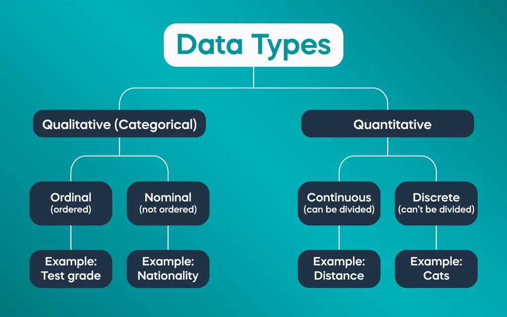
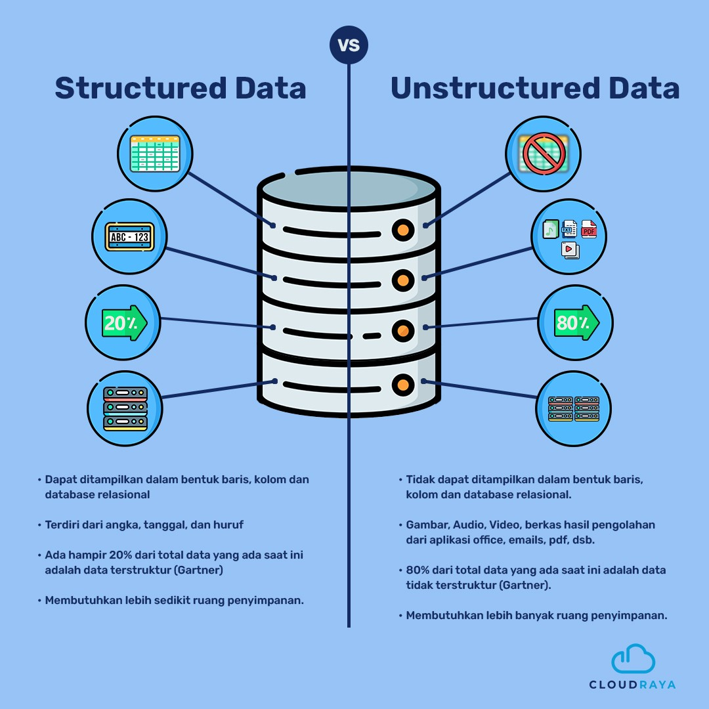
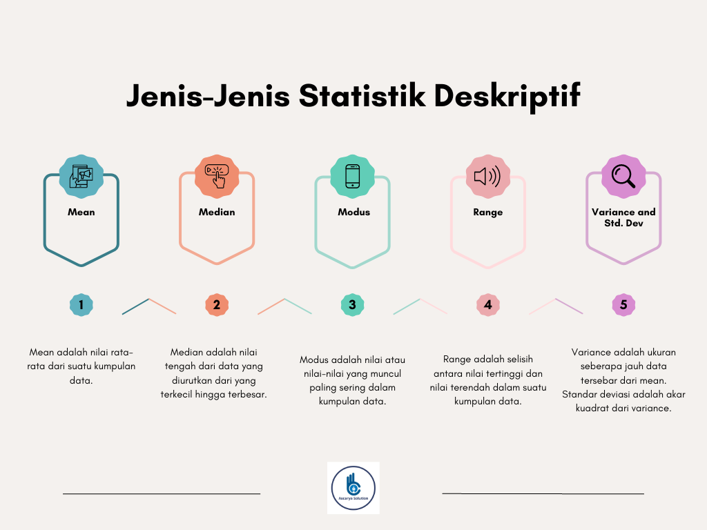
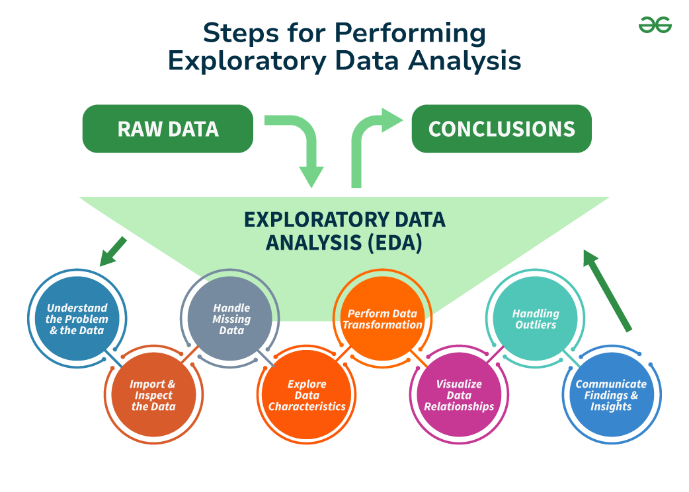
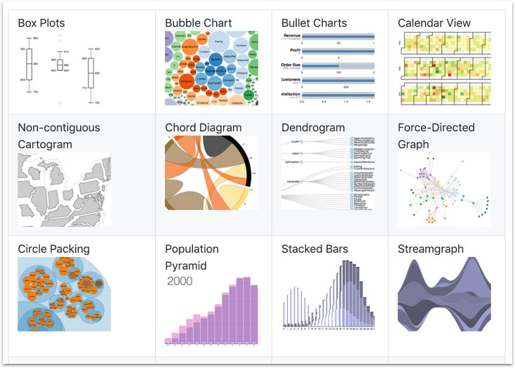

Data Understanding#
Data Understanding adalah fase awal dalam proses data mining (model CRISP-DM) yang bertujuan untuk mengenal data secara mendalam sebelum melakukan pemrosesan atau analisis lebih lanjut. Fase ini melibatkan identifikasi karakteristik data, kualitas data, pola, anomali, serta hubungan antar variabel untuk membentuk landasan yang kokoh sebelum membangun model atau algoritma.
Data Collection#
Memperoleh data mentah dari berbagai sumber (database, API, spreadsheet) Details:
Identifikasi dan akses sumber data (structured, unstructured, atau semi-structured)
Gabungkan data dari berbagai sumber (MySQL & PostgreSQL)
Dokumentasikan asal, format, dan batasan data.
Why it matters: Pengumpulan data yang buruk mengarah pada garbage-in-garbage-out (GIGO) scenarios.
Data Source#
1. Sumber Data Internal (Private)
File Spreadsheet (Excel, CSV, JSON)
Excel: File .xlsx untuk analisis sederhana (laporan penjualan bulanan)
CSV: File teks dengan pemisah koma (ideal untuk pertukaran data antar sistem)
JSON: Format semi-terstruktur untuk data hierarkis (konfigurasi aplikasi)
Database (MySQL, PostgreSQL, Oracle)
MySQL: RDBMS (relasional) untuk data struktur (laporan penjualan)
PostgreSQL: RDBMS (relasional) untuk data struktur (laporan keuangan)
Oracle: Database enterprise untuk sistem besar (transaksi bank)
File Teks (Documents)
Data tidak terstruktur dalam format .txt, .docx, .pdf, atau log file
Multimedia (Gambar, Video)
Data non-teks seperti gambar (.jpg, .png), audio (.mp3), atau video (.mp4)
2. Sumber Data Eksternal (Public)
Public Data Repository
Public Web (Situs Web Publik)
Media Sosial: Tweet dari Twitter, posting Instagram
E-commerce: Harga produk dari Amazon/Tokopedia
Berita: Artikel dari situs berita
Pertimbangan Utama: Pertimbangan utama mencakup aspek data internal dan eksternal. Untuk data internal, keamanan menjadi hal krusial dengan penerapan enkripsi dan pembatasan akses, contohnya mengikuti GDPR untuk data EU, serta integrasi data menghindari silo dengan menggabungkan sumber-sumber internal seperti CRM dan database transaksi. Sementara itu, data eksternal perlu perhatian terhadap legalitas, seperti kepatuhan terhadap aturan web scraping (robots.txt) dan hak cipta, serta kualitas data harus diverifikasi, di mana data dari instansi pemerintah umumnya lebih terpercaya dibandingkan dengan blog pribadi.
Data Types#
Nominal Data / Categorical Data: Data kategori tanpa urutan (jenis kota, warna).
Ordinal Data: Data kategori berurutan (rating 1-5).
Binary Data / Dikotomi: Data kategori dengan 2 nilai (Yes/No).
Numerical Data / Quantitative Data:
Discrete: Bilangan bulat (jumlah anak).
Continuous: Bilangan desimal (suhu).
Text Data / String: Data teks tidak terstruktur.
Temporal Data / Time Series: Data terkait waktu.
Geospatial Data: Data geografis (koordinat).

Data Structure#
Attribute / Feature / Variable / Column / Kolom : Karakteristik atau properti dari data Record / Tuple / Instance / Row / Baris : Satu entri/data point dalam dataset Dataset / Data Frame / Table / Matriks : Kumpulan record dan attribute yang terstruktur Label / Class : Variabel yang ingin diprediksi atau dianalisis Schema / Metadata : Deskripsi struktur data (tipe data, constraint)
Structured Data#
Data terstruktur adalah data yang memiliki format tetap dan terorganisir dalam skema yang jelas, seperti tabel dalam basis data relasional dan disimpan dalam format terorganisir dengan skema tetap, berupa tabel dengan baris (record) dan kolom (field). Data ini disimpan dalam baris dan kolom, di mana setiap kolom merepresentasikan atribut tertentu dan setiap baris adalah satu entitas data. Contoh umum dari data terstruktur termasuk data transaksi di sistem perbankan, daftar pelanggan dalam CRM, dan informasi produk dalam katalog e-commerce. Karena sifatnya yang terstruktur, data ini mudah diproses menggunakan SQL dan alat analisis data lainnya.
Model data terdefinisikan sebelumnya
Format item data berupa text
Antar item data terbedakan dengan jelas
Ekstraksi dan query langsung cukup mudah
Contoh: Data tabular, data berorientasi object, time series
Unstructured Data#
Data tidak terstruktur merujuk pada data yang tidak terorganisir dalam format terstruktur seperti tabel atau database relasional. Berbeda dengan structured data yang memiliki skema jelas (misal: kolom “nama” atau “usia”), unstructured data tidak mengikuti pola tertentu dan sering kali berupa teks bebas, gambar, audio, video, atau data dari media sosial. Contohnya termasuk dokumen teks (email, artikel), postingan di platform seperti Twitter atau Instagram, rekaman percakapan, foto medis, atau bahkan file log sistem.
Model data tidak terdefinisikan sebelumnya
Format item data berupa text, citra, suara, video dan format lainnya
Antar item data tidak cukup jelas terbedakan karena ketidak terstrukturnya
Ekstraksi dan query langsung cukup sulit
Contoh: Dokumen, gambar, video, audio, email, chat, dan lain-lain
Semi-Structured Data#
Data semi-terstruktur adalah jenis data yang memiliki struktur, namun tidak diatur dalam format tabel seperti pada basis data relasional. Meskipun begitu, data ini menggunakan tag atau penanda lain untuk memisahkan dan mengidentifikasi elemen-elemennya serta mengatur hubungan hierarkis di antara elemen tersebut, sehingga informasi yang terkandung dapat diinterpretasikan dengan jelas.

Data Mining Concepts#
Method |
Description |
|---|---|
Classification |
Klasifikasi data ke dalam kategori. |
Regression |
Prediksi nilai numerik kontinu. |
Clustering |
Pengelompokan data tanpa label. |
Association Rule Mining |
Menemukan pola hubungan antar-item. |
Outlier Detection |
Identifikasi data tidak wajar. |
Dimensionality Reduction |
Mengurangi jumlah fitur (PCA). |
Supervised Learning#
Supervised Learning adalah metode pembelajaran mesin di mana model dilatih menggunakan data yang memiliki label atau output yang sudah diketahui sebelumnya. Model belajar dengan cara mengasosiasikan pola dari data input dengan output yang diberikan, sehingga dapat digunakan untuk membuat prediksi terhadap data baru.
Ciri utama dari Supervised Learning:
Menggunakan pasangan data input-output selama proses pelatihan.
Model belajar dari hubungan antara fitur input dan output yang telah ditentukan.
Biasanya digunakan untuk tugas prediksi atau klasifikasi.
Contoh Aplikasi:
Klasifikasi: Mendeteksi apakah email adalah spam atau bukan berdasarkan fitur kata-kata dalam email.
Regresi: Memprediksi harga rumah berdasarkan faktor seperti luas tanah, jumlah kamar, dan lokasi.
Unsupervised Learning#
Unsupervised Learning adalah metode pembelajaran mesin di mana model dilatih menggunakan data yang tidak memiliki label. Tujuan utama dari metode ini adalah untuk menemukan pola atau struktur tersembunyi dalam data tanpa bimbingan eksplisit.
Ciri utama dari Unsupervised Learning:
Tidak menggunakan label atau output yang diketahui.
Model harus menemukan pola atau struktur dalam data secara mandiri.
Digunakan untuk analisis data eksploratif dan pengelompokan.
Contoh Aplikasi:
Clustering: Mengelompokkan pelanggan berdasarkan pola belanja mereka untuk strategi pemasaran yang lebih efektif.
Association Rule Mining: Menganalisis data transaksi untuk menemukan pola hubungan antar-item dalam belanja, seperti “Pelanggan yang membeli roti cenderung membeli susu.”
Aspect |
Supervised Learning |
Unsupervised Learning |
|---|---|---|
Data Label |
Ada label (output diketahui) |
Tidak ada label (output tidak diketahui) |
Tujuan |
Memprediksi nilai atau kategori baru |
Menemukan pola tersembunyi dalam data |
Contoh Metode |
Classification, Regression |
Clustering, Association Rule Mining |
Contoh Kasus |
Deteksi penipuan kartu kredit |
Segmentasi pelanggan, rekomendasi produk |
Installation Requirements#
%pip install numpy pandas sqlalchemy python-dotenv matplotlib seaborn pymysql psycopg2-binary
numpyTujuan: Library untuk komputasi numerik.
Fungsi Utama: Menyediakan array multidimensi dan operasi matematis efisien.
Contoh Penggunaan: Mendukung operasi numerik di pandas atau perhitungan statistik.
Manfaat: Meningkatkan performa komputasi data.
pandasTujuan: Library untuk manipulasi dan analisis data tabular.
Fungsi Utama: Memproses data dalam format
DataFrameuntuk analisis dan transformasi.Contoh Penggunaan:
Mengimpor data dari CSV, Excel, atau SQL ke
DataFrame.Membersihkan data, melakukan grouping, atau menghitung statistik.
Manfaat: Menawarkan alat yang kuat dan intuitif untuk pengolahan dataset besar.
sqlalchemyTujuan: Toolkit SQL dan Object-Relational Mapping (ORM) untuk Python.
Fungsi Utama: Membuat kode database-agnostik yang kompatibel dengan berbagai sistem database (MySQL, PostgreSQL, SQLite, dll.).
Contoh Penggunaan:
Menghubungkan aplikasi ke database menggunakan
create_engine.Mendefinisikan skema tabel dengan kelas Python (ORM).
Mengintegrasikan hasil query ke
pandas.DataFrame.
Manfaat: Menyederhanakan pengelolaan database dan memungkinkan fleksibilitas lintas platform database.
python-dotenvTujuan: Memuat variabel lingkungan dari file
.envke dalam aplikasi.Fungsi Utama: Mengelola informasi sensitif seperti kredensial database atau kunci API secara aman.
Contoh Penggunaan: Memuat parameter koneksi database dari file
.envuntuk digunakan olehsqlalchemy.Manfaat: Meningkatkan keamanan dengan menghindari hardcoding data sensitif dan memudahkan konfigurasi lintas lingkungan.
matplotlibTujuan: Library untuk membuat visualisasi data statis, interaktif, atau animasi.
Fungsi Utama: Menghasilkan berbagai jenis grafik seperti plot garis, scatter, histogram, atau bar chart.
Contoh Penggunaan: Memvisualisasikan distribusi data atau tren dalam analisis eksplorasi.
Manfaat: Memberikan fleksibilitas tinggi untuk kustomisasi visualisasi data.
seabornTujuan: Library visualisasi data berbasis
matplotlibdengan antarmuka yang lebih ramah pengguna.Fungsi Utama: Membuat visualisasi statistik yang estetis seperti heatmap, boxplot, atau pairplot.
Contoh Penggunaan: Menganalisis hubungan antar variabel atau distribusi data dengan visualisasi yang lebih menarik.
Manfaat: Mempercepat pembuatan visualisasi yang informatif dengan sintaks sederhana dan integrasi langsung dengan
pandas.
pymysqlTujuan: Konektor untuk menghubungkan Python dengan database MySQL.
Fungsi Utama: Menjalankan query SQL dan mengelola koneksi ke database MySQL.
Contoh Penggunaan: Mengambil data dari tabel MySQL atau memperbarui record database.
Manfaat: Menyediakan antarmuka sederhana untuk interaksi langsung dengan database MySQL tanpa memerlukan ORM.
psycopg2-binaryTujuan: Adaptor untuk menghubungkan Python dengan database PostgreSQL.
Fungsi Utama: Mengelola koneksi dan eksekusi query pada database PostgreSQL.
Contoh Penggunaan: Menjalankan query kompleks atau mengimpor data PostgreSQL ke dalam aplikasi Python.
Manfaat: Mendukung performa tinggi dan fitur PostgreSQL seperti tipe data khusus (JSON, UUID).
Why These Packages Together?#
Terhubung ke database (MySQL/PostgreSQL) melalui pymysql/psycopg2.
Menggunakan sqlalchemy untuk interaksi database yang fleksibel.
Menggunakan panda untuk manipulasi data.
Mengamankan kredensial dengan python-dotenv.
Memvisualisasikan hasil dengan matplotlib dan seaborn.
Import Requirements#
os
Library bawaan Python untuk berinteraksi dengan sistem operasi.Fungsi Utama: Mengelola file, direktori, dan variabel lingkungan.
Contoh Penggunaan: Membaca path file, membuat direktori baru, atau mengakses variabel lingkungan sistem.
Manfaat: Memudahkan otomatisasi tugas berbasis sistem dan memastikan kode berjalan lintas platform (cross-platform).
pandas(pd)
Library inti untuk manipulasi dan analisis data berbasis Python.Fungsi Utama: Memproses data tabular dalam bentuk
DataFrameatauSeries.Contoh Penggunaan: Membersihkan data, filtering, grouping, merging dataset, atau menghitung statistik deskriptif.
Manfaat: Menyederhanakan pengolahan dataset besar dengan sintaks yang intuitif dan performa tinggi.
sqlalchemy(create_engine)
Toolkit SQL dan ORM (Object-Relational Mapping) untuk menghubungkan Python dengan basis data.Fungsi Utama: Membuat koneksi ke database relasional (misalnya, MySQL, PostgreSQL, SQLite) melalui
create_engine.Contoh Penggunaan: Mengeksekusi query SQL dan mengimpor hasilnya langsung ke
DataFramepandas.Manfaat: Menyediakan antarmuka yang fleksibel untuk integrasi data dari berbagai sumber database.
dotenv(load_dotenv)
Library untuk mengelola variabel lingkungan dari file.env.Fungsi Utama: Memuat variabel lingkungan secara aman ke dalam program.
Contoh Penggunaan: Menyimpan kredensial database, API key, atau konfigurasi sensitif lainnya tanpa hardcoding.
Manfaat: Meningkatkan keamanan kode dan memudahkan pengelolaan konfigurasi di berbagai lingkungan (development, production).
matplotlib.pyplot(plt)
Modul dari librarymatplotlibuntuk visualisasi data.Fungsi Utama: Membuat berbagai jenis plot seperti grafik garis, scatter, histogram, atau bar chart.
Contoh Penggunaan: Memvisualisasikan tren data, distribusi, atau hubungan antar variabel.
Manfaat: Membantu eksplorasi data secara visual dan menyampaikan hasil analisis secara jelas kepada pemangku kepentingan.
numpy(np)
Library fundamental untuk komputasi numerik di Python.Fungsi Utama: Menyediakan struktur data array multidimensi dan operasi matematis yang efisien.
Contoh Penggunaan: Melakukan perhitungan statistik, manipulasi array, atau mendukung operasi di
pandas.Manfaat: Meningkatkan performa komputasi data dan mendukung berbagai library data science.
seaborn(sns)
Library visualisasi data yang dibangun di atasmatplotlib.Fungsi Utama: Membuat visualisasi statistik yang menarik dan informatif dengan sintaks yang lebih sederhana.
Contoh Penggunaan: Membuat heatmap, box plot, atau grafik regresi untuk analisis eksplorasi data.
Manfaat: Mempercepat pembuatan visualisasi yang estetis dan mendukung integrasi langsung dengan
pandas.
import os
import numpy as np
import pandas as pd
import seaborn as sns
from dotenv import load_dotenv
import matplotlib.pyplot as plt
from sqlalchemy import create_engine
load_dotenv()
False
Data Gathering#
Dataset Iris merupakan kumpulan data yang mencakup tiga spesies bunga iris setosa, versicolor, dan virginica dengan empat fitur utama, yaitu sepal_length, sepal_width, petal_length, dan petal_width. Data ini dihosting di platform aiven.io, dengan penyimpanan terpisah antara data petal yang berada di database MySQL dan data sepal yang tersimpan di database PostgreSQL.
mysql_url = os.getenv("MYSQL_URL")
postgres_url = os.getenv("POSTGRES_URL")
# DB connection
mysql_engine = create_engine(mysql_url)
postgres_engine = create_engine(postgres_url)
# Get Data from sql and postgres
df_mysql = pd.read_sql("SELECT * FROM iris_mysql",mysql_engine)
df_postgres = pd.read_sql("SELECT * FROM iris_postgre ORDER BY id",postgres_engine)
display(df_mysql.head())
| id | class | petal length | petal width | |
|---|---|---|---|---|
| 0 | 1 | Iris-setosa | 86.4 | 70.0 |
| 1 | 2 | Iris-setosa | 1.4 | 0.2 |
| 2 | 3 | Iris-setosa | 1.3 | 0.2 |
| 3 | 4 | Iris-setosa | 1.5 | 0.2 |
| 4 | 5 | Iris-setosa | 1.4 | 0.2 |
display(df_postgres.head())
| id | class | sepal length | sepal width | |
|---|---|---|---|---|
| 0 | 1 | Iris-setosa | 20.1 | 30.5 |
| 1 | 2 | Iris-setosa | 4.9 | 3.0 |
| 2 | 3 | Iris-setosa | 4.8 | 3.2 |
| 3 | 4 | Iris-setosa | 4.6 | 3.1 |
| 4 | 5 | Iris-setosa | 5.0 | 3.6 |
Data Profilling#
Dalam tahap data profiling, data dari kedua sumber MySQL untuk data petal dan PostgreSQL untuk data sepal digabungkan guna memperoleh gambaran menyeluruh mengenai kualitas, konsistensi, dan distribusi fitur dalam dataset Iris. Penggabungan ini memungkinkan analisis lebih mendalam, seperti identifikasi outlier dan evaluasi korelasi antar fitur, serta memastikan integritas data yang telah dikumpulkan. Dengan demikian, pendekatan integrasi data ini sangat tepat untuk mendapatkan insight yang komprehensif dan mendukung pengambilan keputusan berbasis data.
df_postgres = df_postgres.drop(columns=["class"])
df_iris = df_mysql.merge(df_postgres, on="id")
df_iris.to_csv("data/tugas1/iris_combined.csv", index=False) # convert file to scv
print(df_iris)
id class petal length petal width sepal length sepal width
0 1 Iris-setosa 86.4 70.0 20.1 30.5
1 2 Iris-setosa 1.4 0.2 4.9 3.0
2 3 Iris-setosa 1.3 0.2 4.8 3.2
3 4 Iris-setosa 1.5 0.2 4.6 3.1
4 5 Iris-setosa 1.4 0.2 5.0 3.6
.. ... ... ... ... ... ...
145 146 Iris-virginica 5.2 2.3 6.7 3.0
146 147 Iris-virginica 5.0 1.9 6.3 2.5
147 148 Iris-virginica 5.2 2.0 6.5 3.0
148 149 Iris-virginica 5.4 2.3 6.2 3.4
149 150 Iris-virginica 5.1 1.8 5.9 3.0
[150 rows x 6 columns]
Data Statistics#

feature = ["sepal length", "sepal width", "petal length", "petal width"]
# Statistik dasar
stats = df_iris[feature].agg(['mean', 'median', 'min', 'max', 'var', 'std'])
mode_values = df_iris[feature].mode().iloc[0]
range_values = df_iris[feature].max() - df_iris[feature].min()
stats.loc['mode'] = mode_values
stats.loc['range'] = range_values
display(stats)
plt.figure(figsize=(10, 6))
sns.heatmap(stats, annot=True, cmap="YlGnBu", fmt=".2f", cbar_kws={'label': 'Nilai'})
plt.title("Heatmap Statistik Deskriptif feature Iris")
plt.xlabel("Feature")
plt.ylabel("Statistik")
plt.tight_layout()
plt.savefig("data/tugas1/assets/heatmap_statistik_iris.png", dpi=300)
plt.show()
| sepal length | sepal width | petal length | petal width | |
|---|---|---|---|---|
| mean | 5.944000 | 3.234000 | 4.325333 | 1.664000 |
| median | 5.800000 | 3.000000 | 4.400000 | 1.300000 |
| min | 4.300000 | 2.000000 | 1.000000 | 0.100000 |
| max | 20.100000 | 30.500000 | 86.400000 | 70.000000 |
| var | 2.034427 | 5.209642 | 48.588750 | 32.127017 |
| std | 1.426333 | 2.282464 | 6.970563 | 5.668070 |
| mode | 5.000000 | 3.000000 | 1.500000 | 0.200000 |
| range | 15.800000 | 28.500000 | 85.400000 | 69.900000 |
Data Exploration#

# Matriks korelasi
corr_matrix = df_iris[feature].corr()
display(corr_matrix)
plt.figure(figsize=(12, 6))
sns.heatmap(corr_matrix, annot=True, cmap='coolwarm', fmt='.2f', cbar_kws={'label': 'Korelasi'})
plt.title("Heatmap Matriks Korelasi")
plt.show()
plt.savefig("data/tugas1/assets/heatmap.png", dpi=300)
plt.show()
| sepal length | sepal width | petal length | petal width | |
|---|---|---|---|---|
| sepal length | 1.000000 | 0.789700 | 0.916298 | 0.871682 |
| sepal width | 0.789700 | 1.000000 | 0.930563 | 0.964198 |
| petal length | 0.916298 | 0.930563 | 1.000000 | 0.991532 |
| petal width | 0.871682 | 0.964198 | 0.991532 | 1.000000 |
<Figure size 640x480 with 0 Axes>
# Fungsi deteksi outlier menggunakan IQR
def detect_outliers_iqr(df, column):
Q1 = df[column].quantile(0.25)
Q3 = df[column].quantile(0.75)
IQR = Q3 - Q1
lower_bound = Q1 - 1.5 * IQR
upper_bound = Q3 + 1.5 * IQR
outliers = df[(df[column] < lower_bound) | (df[column] > upper_bound)][column]
return outliers
# Cetak detail outlier menggunakan IQR
print("Outliers Detection (IQR):")
for col in feature:
outliers = detect_outliers_iqr(df_iris, col)
print(f"{col}: {len(outliers)} outliers")
if len(outliers) > 0:
print(outliers)
plt.figure(figsize=(12, 8))
for idx, col in enumerate(feature, 1):
plt.subplot(2, 2, idx)
sns.boxplot(y=df_iris[col])
plt.title(f'Boxplot of {col}')
plt.ylabel('Value')
outliers = detect_outliers_iqr(df_iris, col)
plt.text(0.95, 0.95, f'Outliers: {len(outliers)}',
horizontalalignment='right',
verticalalignment='top',
transform=plt.gca().transAxes,
bbox=dict(facecolor='white', alpha=0.8))
plt.tight_layout()
plt.savefig("data/tugas1/assets/outliers_detection_(IQR).png", dpi=300)
plt.show()
Outliers Detection (IQR):
sepal length: 1 outliers
0 20.1
Name: sepal length, dtype: float64
sepal width: 5 outliers
0 30.5
15 4.4
32 4.1
33 4.2
60 2.0
Name: sepal width, dtype: float64
petal length: 1 outliers
0 86.4
Name: petal length, dtype: float64
petal width: 1 outliers
0 70.0
Name: petal width, dtype: float64
def detect_outliers_zscore(df, column, threshold=3):
z_scores = np.abs((df[column] - df[column].mean()) / df[column].std())
outliers = df[z_scores > threshold][column]
return outliers
print("Outliers Detection (Z-Score):")
for col in feature:
outliers = detect_outliers_zscore(df_iris, col)
print(f"{col}: {len(outliers)} outliers")
if len(outliers) > 0:
print(outliers)
plt.figure(figsize=(12, 8))
for idx, col in enumerate(feature):
plt.subplot(2, len(feature) // 2, idx + 1)
data = df_iris[col]
z_scores = np.abs((data - data.mean()) / data.std())
plt.scatter(data.index, data.values, color='blue', alpha=0.6, label='Data')
outliers = detect_outliers_zscore(df_iris, col)
if not outliers.empty:
plt.scatter(outliers.index, outliers.values, color='red', s=100, label='Outliers', edgecolor='black')
plt.title(f'Scatter Plot of {col} (Z-Score)')
plt.xlabel('Index')
plt.ylabel('Value')
plt.legend()
plt.text(0.95, 0.95, f'Outliers: {len(outliers)}',
horizontalalignment='right',
verticalalignment='top',
transform=plt.gca().transAxes,
bbox=dict(facecolor='white', alpha=0.8))
plt.tight_layout()
plt.savefig("data/tugas1/assets/outliers_detection_(Z-Score).png", dpi=300)
plt.show()
Outliers Detection (Z-Score):
sepal length: 1 outliers
0 20.1
Name: sepal length, dtype: float64
sepal width: 1 outliers
0 30.5
Name: sepal width, dtype: float64
petal length: 1 outliers
0 86.4
Name: petal length, dtype: float64
petal width: 1 outliers
0 70.0
Name: petal width, dtype: float64
print("Missing Values:")
print(df_iris.isnull().sum())
print("\nJumlah Baris Duplikat:", df_iris.duplicated().sum())
if df_iris.duplicated().sum() > 0:
print("Data Duplikat:")
print(df_iris[df_iris.duplicated()])
Missing Values:
id 0
class 0
petal length 0
petal width 0
sepal length 0
sepal width 0
dtype: int64
Jumlah Baris Duplikat: 0
Data Visualization#

# Distribusi frekuensi untuk variabel kategorikal (class)
print("Distribusi Frekuensi untuk class:")
print(df_iris['class'].value_counts())
# Bar chart untuk variabel kategorikal (class)
plt.figure(figsize=(16, 6))
sns.countplot(x='class', data=df_iris)
plt.title("Distribusi class")
plt.savefig("data/tugas1/assets/distribusi_class.png")
plt.show()
Distribusi Frekuensi untuk class:
class
Iris-setosa 50
Iris-versicolor 50
Iris-virginica 50
Name: count, dtype: int64
# Histogram for feature distribution
fig, axes = plt.subplots(2, 2, figsize=(12, 8))
fig.suptitle("Distribusi feature Dataset Iris", fontsize=16)
for ax, col in zip(axes.flat, feature):
sns.histplot(df_iris[col], bins=20, ax=ax, color='skyblue', edgecolor='black')
ax.set_title(f"Distribusi {col}")
ax.set_xlabel(col)
ax.set_ylabel("Frekuensi")
plt.tight_layout(rect=[0, 0, 1, 0.96])
plt.savefig("data/tugas1/assets/iris_histogram.png")
plt.show()
# Pairplot for feature relationships
sns.pairplot(df_iris, vars=feature, hue="class", palette="Set1")
plt.suptitle("Pairplot feature Dataset Iris", y=1.02)
plt.savefig("data/tugas1/assets/iris_pairplot.png")
plt.show()